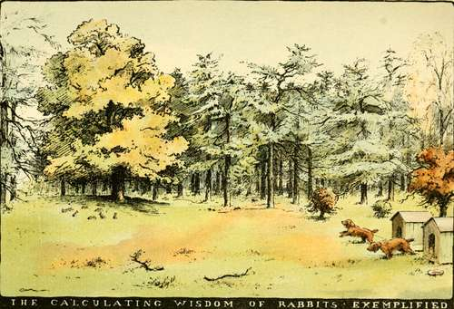

Beginning To Shoot And The Management Of The Gun. Part 5
Description
This section is from the book "Horses, Guns, And Dogs", by J. Otho Paget, George A. B. Dewar A. B. Portman, And A. Innes Shand. Also available from Amazon: Horses, guns and dogs.
Beginning To Shoot And The Management Of The Gun. Part 5
What I have said against shooting at rabbits in cover in a dangerous way of course applies equally to all ground game; it applies also to low flying birds. Woodcocks occasionally fly very low indeed ; pheasants, too, will fly low down the line : leave these alone ; do not point at them. Let your rule in this matter be of iron. Let no bet cause you to relax. But, by the way, I advise you never to bet about your own shooting. It is bad enough when other folk bet about you. It is Mr. Rider Haggard who tells the tale of the man who was disconcerted at finding himself watched by a knot of miners at a pheasant drive. He missed several shots, when one of the miners said in effect to him, " I have put another bob on you, master, and if you miss the next bird, I'll knock yer bloomin' head off ! "
1 Dogs now and then in very thick places, especially dogs which do not give tongue, get hit through no gross carelessness on the part of the shooter, but such cases are happily rare.
A few general rules aimed at safety may be given here. If you are not prepared to obey them in the spirit and the letter, you ought not to handle a gun at all. (1) Never point a gun, loaded or unloaded, at anybody ; it is a fool's game. (2) Do not load your gun till the start is actually made. (3) Unload directly the shooting is over. (4) In going through hedges, over gates, etc., take great care not to let the barrels of your gun point towards any part of your own person, or towards any one else who is out with you ; and let your gun be at half-cock. (5) When you leave off shooting at the luncheon-time, unload your gun. (6) When you prepare to move with your companions from one beat to another, put your gun at half-cock. (7) In moving from beat to beat, carry your gun under your right or left arm with the barrels pointing to the ground, or over one of your shoulders with the barrels not pointing at right angles from your back, but at something like an angle of forty-five above your back. (8) Never shoot down the line. (9) Never shoot unless you are sure there is no one in the line of fire. (10) Remember glance shot; remember glance shot.
Before undertaking to write on shooting, the question suggested itself, how far was I qualified to help the beginner with advice and experiences ? Looking over my own qualifications, I find that the only shooting I can write of with knowledge is of a simple kind. Important days with pheasants, where everything is organised scientifically, I know practically nothing of; nor have I ever shot a driven grouse. So I intend saying nothing of these branches of the sport. To write of them I should have to draw largely from other books, which would be poor fun. Mr. Portman will tell of those branches in a chapter on advanced shooting that follows ; and, if skill with the gun and an experience of the chief shoots in the country count, you could hardly find a stronger guide.
This chapter will deal with shooting of a much less ambitious sort, of wild pheasants and of partridges for the most part walked up, of the wood-pigeon, of an occasional hare and woodcock ; above all, of rabbiting by the aid of dogs alone, or of dogs with two or three beaters, and of ferreting. Sometimes we shall be among the clover and the sainfoin and swedes in autumn, at others ferreting the hedge-banks and the burrows in the coppices and high wood, or visiting the furze-bushes on the commons, where the rabbits lie out when the cows and cowboys have not been too much about. We shall stalk rabbits, too, in the glades and woodland paths in summer, either with a gun or a rook rifle, and lie in wait for the great flocks of wood-pigeons on bitter winter evenings. And this I pledge myself to듈 will not copy anything out of the books, but will talk only of things that many's the time I have done myself, and joyed in the doing.
Potting rabbits as they sat nibbling the short grass in the woodland paths, or rides as we often call them, was the way I began ; and it is the way, I imagine, in which some thousands of young shooters begin every year. You spy the rabbit a hundred yards off or so, and creep up very craftily till you are within range, say forty yards. Then, while he is nibbling, you raise the gun to the right shoulder, close the left eye with tremendous determination, look along the line between the barrels with the right eye till the little round sight at the end covers the rabbit. Finally, you pull the trigger.
It is rather a cold-blooded way of shooting compared with the way we shall turn to directly, but as a first step in shooting I do not know that you can better it. You may practise no doubt, too, at paper targets pinned up among the stems of underwood or against trees들f the tree owner does not object; but, to shoot running or flying game well, the practical way is to begin by shooting sitting rabbits, or, when you can find them, sitting wood-pigeons. Blackbirds, thrushes, and other singing and small perching birds you should let be ; they are such little fellows for a great charge of number 5 or 6 shot, such as we shall use throughout these chapters.
It is an easy thing this shooting of the sitting rabbit at thirty or even forty yards distance.1 But not quite so simple always to lay him stone dead, even though you have a double-barrel and fire the left, which is a choke bore and carries the charge closer for a slightly longer distance, so that it strikes with deadlier effect. The object always is to shoot your game in the head. So you aim at that, even in the longer shots where the charge must scatter and strike other parts as well as the head.
In potting the rabbits or pigeons as they sit, get into the way of (1) holding the gun firmly against the shoulder, and (2) grasping the gun as far down the barrel or barrels as you conveniently can. At one time I got into the bad habit of holding the gun not firmly enough to the shoulder in shooting at running and flying game든specially running rabbits which offered swift snapshots드nd it was hard to break myself of the fault. Holding loosely to the shoulder will affect your aim, and if there is much " kick " in the powder, it will, it is quite likely, make your right jaw tender after you have fired many cartridges. It is not workmanlike to hold the gun thus loosely, and it may give folk the notion 듩ot necessarily a right notion듮hat you are not a good man to be near in covert. As to the second point, this is essential too. If you hold the gun with your left hand too near the stock, you will not have the necessary power over it; it will be ill-balanced in your hands, and things will go all wrong to a certainty. Let the left arm be straightened out as much as it conveniently can, and then, when the gun rests between the thumb and fingers of that hand (the hold being of course round the barrels underneath), it will be well under command ; ease and steadiness will be the result. There is as much in the grip of the gun as in the grip of the golf driver, only there is practically but one way of gripping the former.
1 That is, after you have stolen within range of or stalked him. The stalk is an exciting thing in many branches of sport.
Continue to:
- prev: Beginning To Shoot And The Management Of The Gun. Part 4
- Table of Contents
- next: Beginning To Shoot And The Management Of The Gun. Part 6